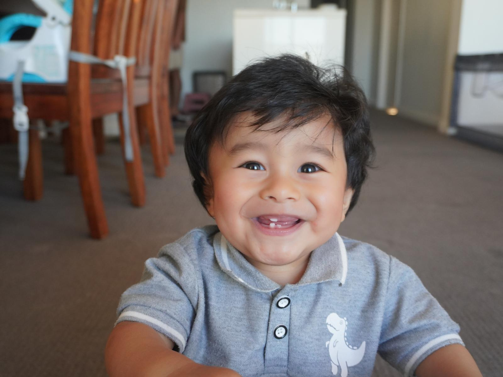
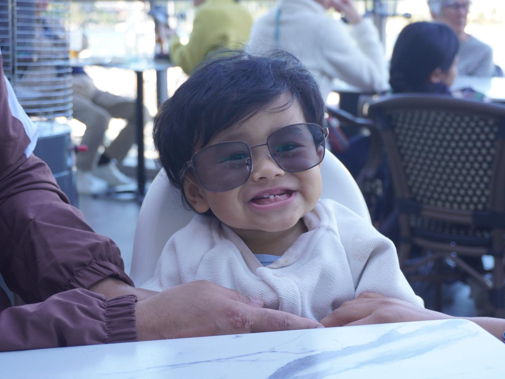
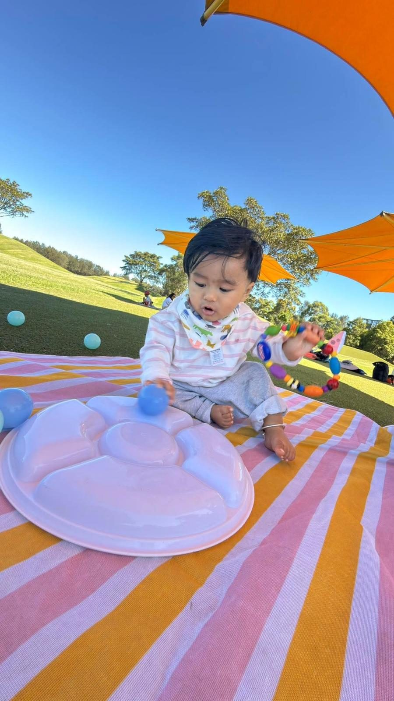
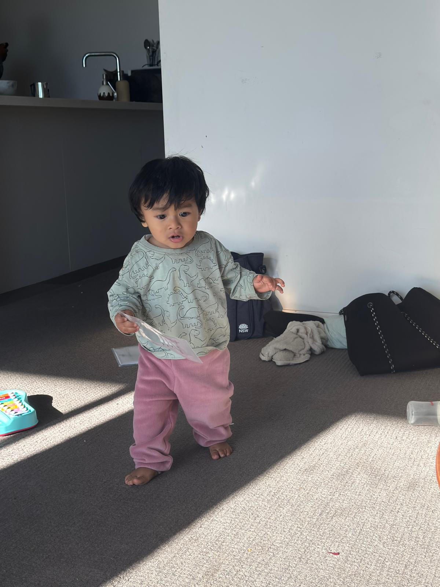

Osiris’s
little world.
A little corner of the internet celebrating Osiris — an energetic little explorer with endless curiosity and a big sense of adventure.
Meet Osiris →Curious eyes. Busy feet. A world to discover.
Energetic, observant, independent and adventurous, Osiris loves exploring what is happening around him. New faces, places and objects all get a careful look before his playful side appears.
More about Osiris →

Playground adventures
Swings, climbing, exploring and hide-and-seek. A simple playground visit quickly becomes a little adventure when there is somewhere new to go and something new to discover.
Read the adventure →Always discovering something.
From figuring out how things move to experimenting with sounds, Osiris is always discovering something new.
Discover
Investigating what objects do and what happens when he interacts with them.
Create
Making sounds, tapping, building, stacking and experimenting through play.
Move
Running, climbing, crawling through tunnels and trying new ways to get around.
The small things worth remembering.

those little steps ♡

mama & papa

little namaste 🙏